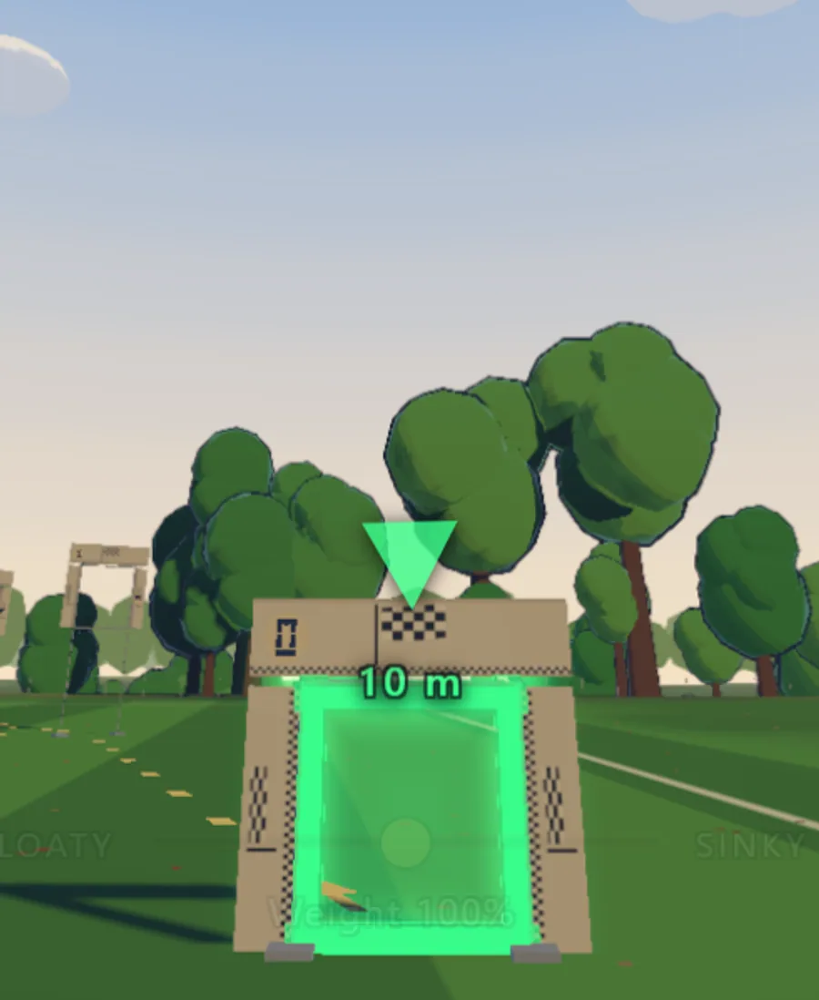
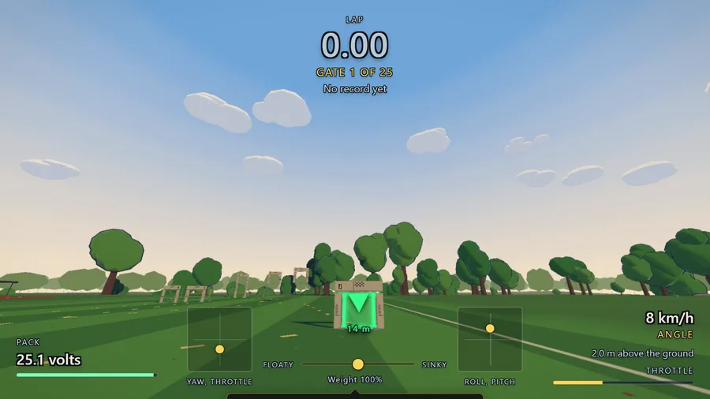
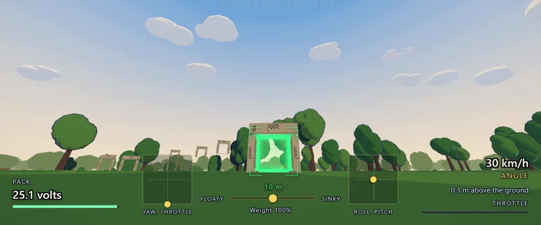
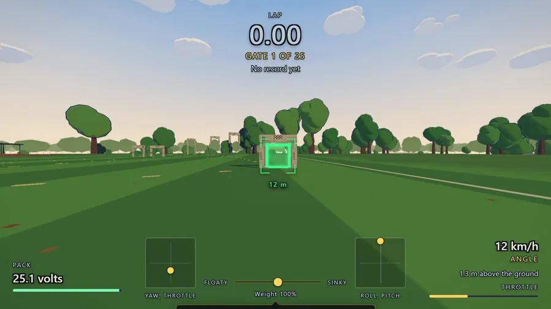
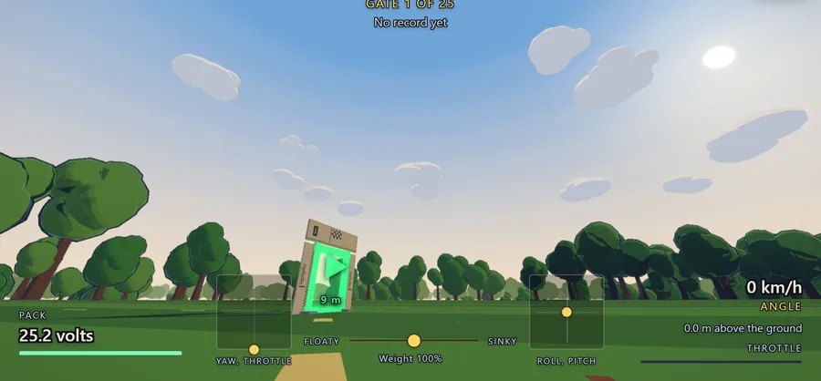
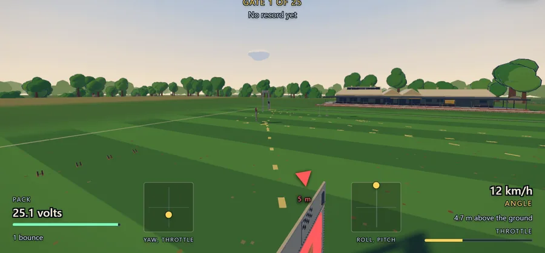
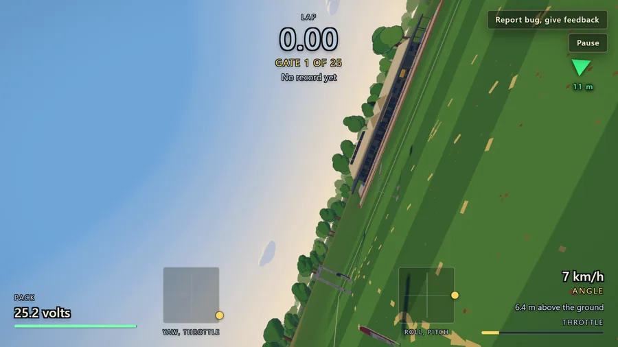
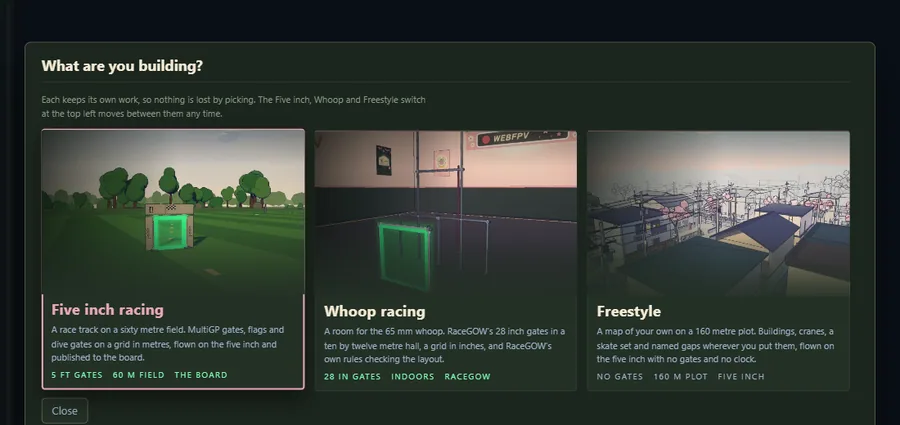
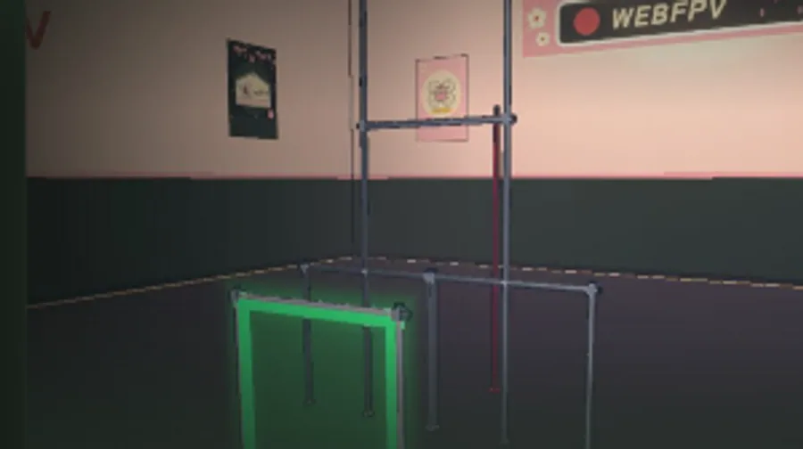
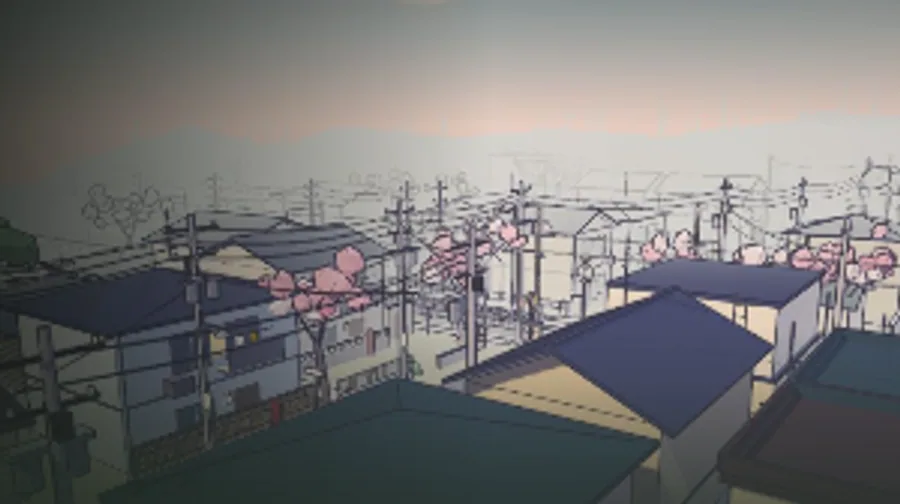

WEBFPV
andAgainFPV. A pilot since 2020. It started as curiosity.

The question

Could I compile Betaflight, put it in a virtual world, in a browser, and fly decent?

The day the answer was yes, I decided to see how far it could go. It was a project.
For me

First it was for me. A sim that was easy to fly. For my kids, and for me.

Too fast. It flew. Not a clean lap. Decent enough to keep going.
For anyone

Most school kids have no money, and they usually cannot install anything on their computers. So they have no sim.

I wanted it for anyone who could not buy a VelociDrone, or anything like it. Free. No install. No account.
Their game

What I am proudest of is the map and track builder. People can make their own game.
The feel

What nearly made me quit was the feel. A real whoop and the sim. It is different. But how?
Next

The game keeps building. The next chapter is the next thing that ships.
Fly WebFPV